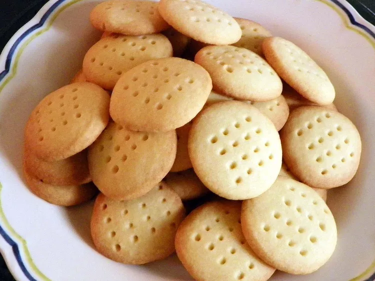

Home
Scottish Shortbread

Light and very buttery Scottish delight!
The recipe does not make a large batch, but it's simple enough to make many batches. The recipe does not double well.
Ingredients
- Flour: 1 ½ cups all-purpose flour.
- Sugar: ⅓ cup white sugar.
- Butter: ¾ cup butter.
Directions
- Preheat the oven to 350 degrees F (175 degrees C). Butter a 9-inch square baking dish.
- Blend flour, sugar, and butter until well combined; dough will be stiff. Press into the prepared dish and prick the top all over with a fork.
- Bake in the preheated oven until pale golden brown on the edges, 20 to 25 minutes. Cool completely before cutting into squares.